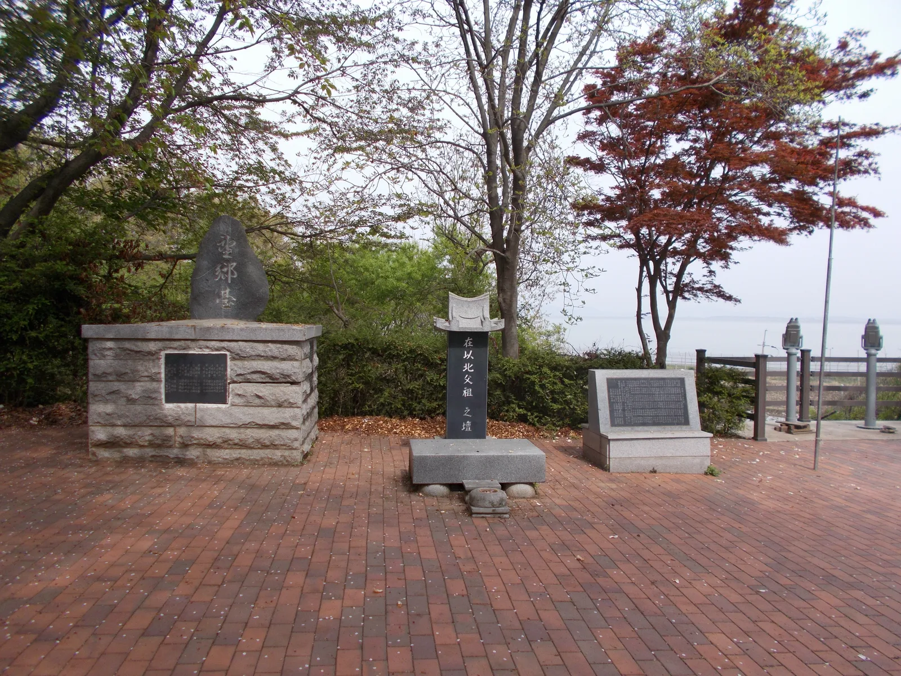
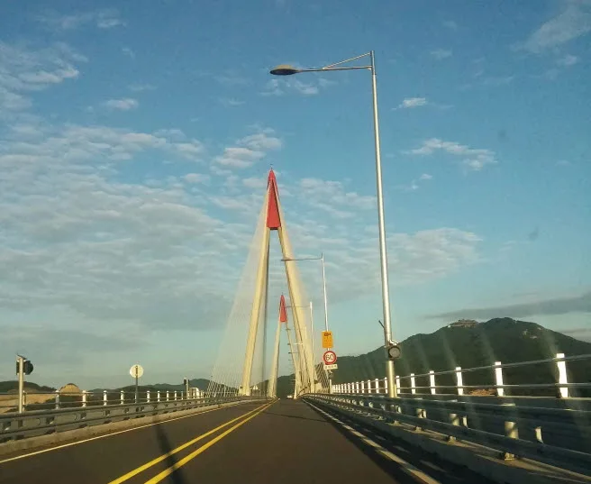
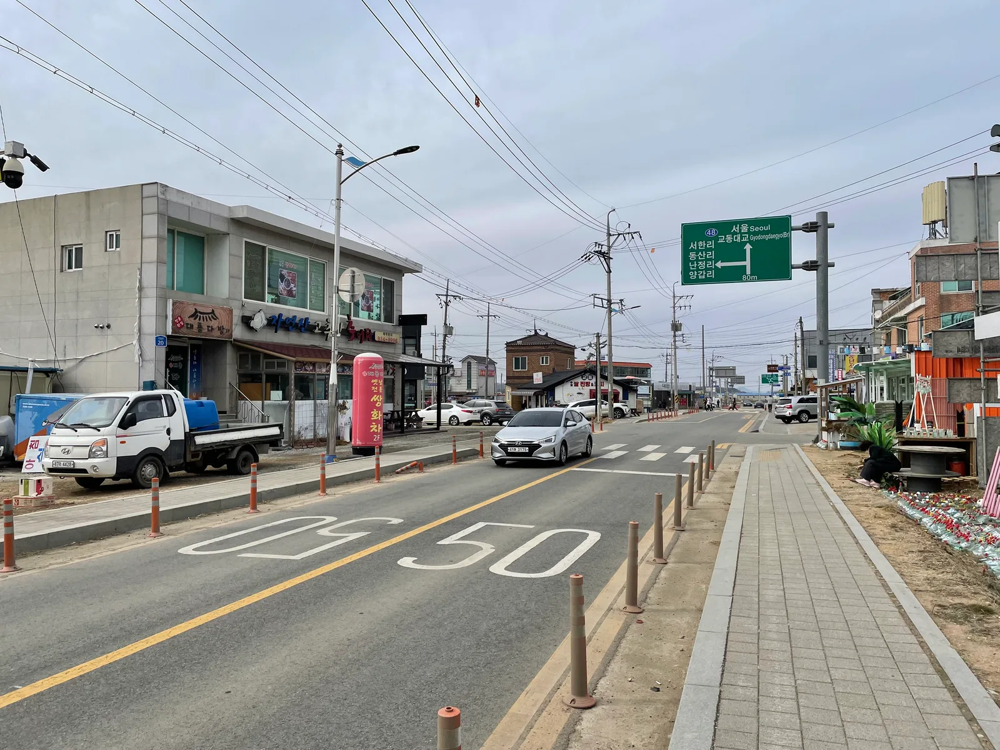
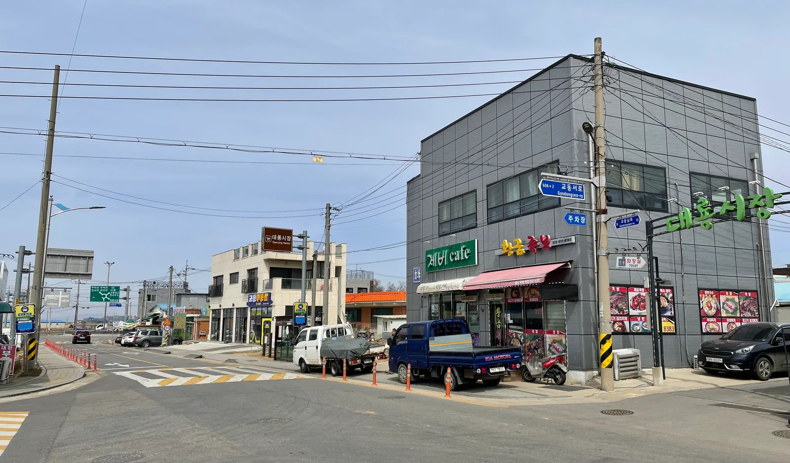
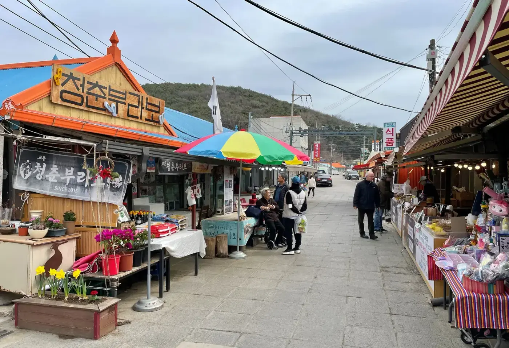
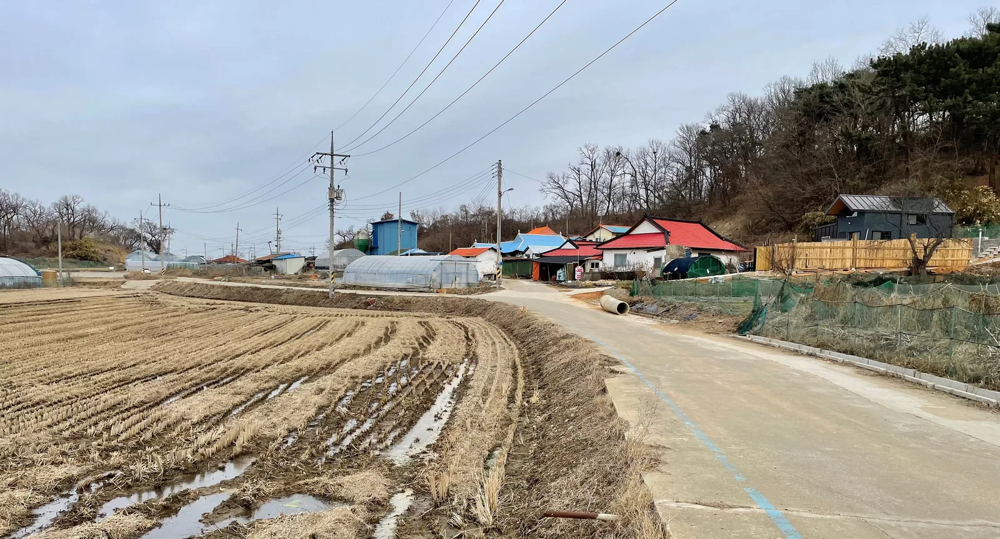
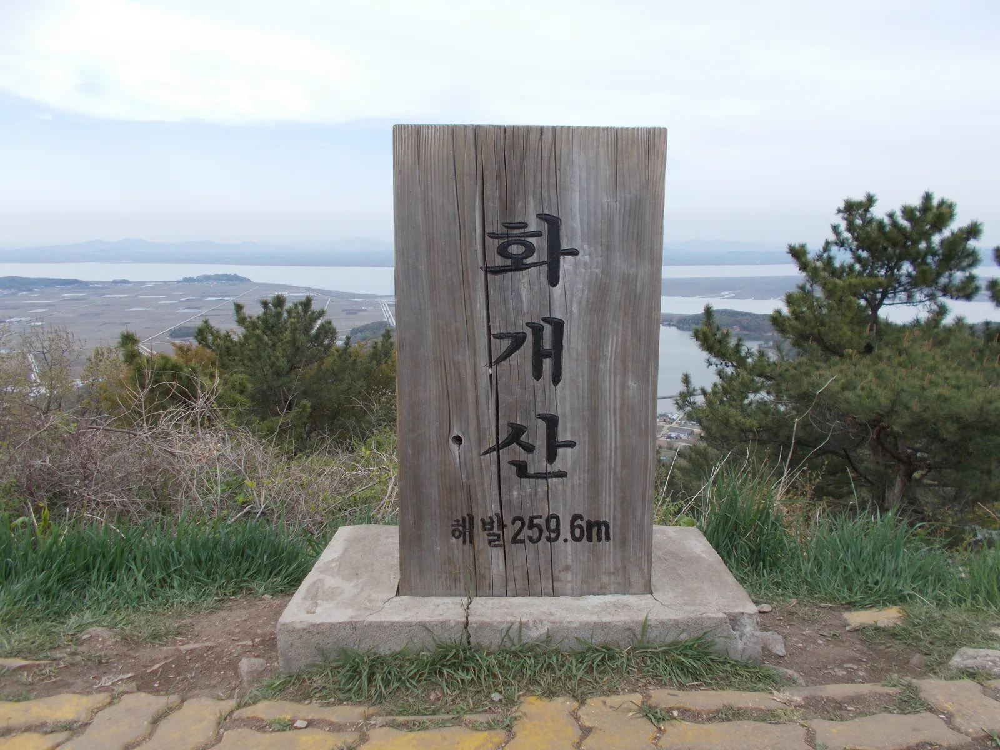
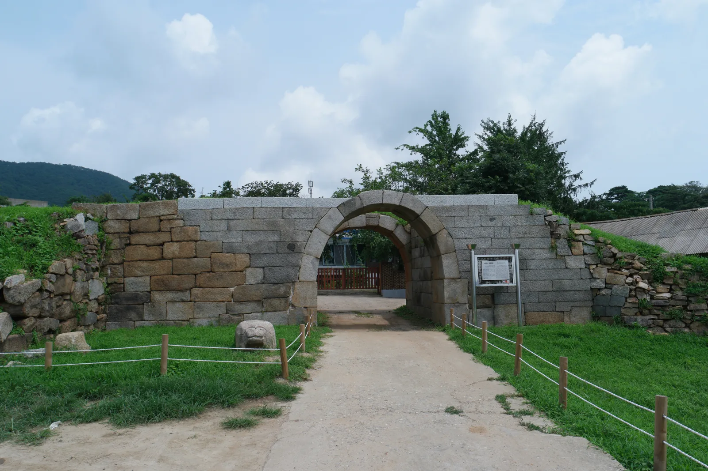

▲ 대룡시장 초입, 트럭 좌판이 늘어선 골목 풍경. 6·25전쟁 때 황해도 연백에서 온 실향민들이 고향의 연백장을 본떠 만든 시장이다 사진=Wikimedia Commons (Vincent van Zeijst, CC BY-SA 4.0)
1. 왜 지금 교동도인가
인천 강화군 교동면의 대룡시장은 6·25전쟁 때 황해도 연백군(延白郡)에서 한강 하구를 건너 피란 온 실향민들이 고향의 '연백장'을 그대로 본떠 만든 골목시장이다. 1953년 정전협정으로 한강 하구가 중립수역으로 묶이면서 코앞에 두고도 돌아갈 수 없게 된 피란민들은 생계를 위해 교동도에 눌러앉았고, 당시 연백에서 넘어온 피란민 수가 교동도 원주민 인구보다 많았을 정도였다고 한다. 70년 넘게 이어진 이 골목은 옛 간판과 이발관, 다방이 남아 있어 시간이 멈춘 듯한 풍경으로 알려져 있다.
교동도는 2014년 교동대교 개통 전까지 배로만 드나들 수 있던 섬이었다. 다리가 놓인 뒤에도 민간인출입통제선(민통선) 안쪽이라 신분증 확인과 출입 절차를 거쳐야 하는 점이 다른 여행지와 다르다. 자동차로 접근하는 여행자라면 이 통제 구간과 시간대를 미리 알아두는 게 시장 구경만큼이나 중요하다.

▲ 교동도에 세워진 실향민 망향비. 고향을 눈앞에 두고 돌아가지 못한 이들의 사연이 새겨져 있다 사진=Wikimedia Commons (Kussy, CC BY-SA 2.1 jp)
2. 가는 법 — 교동대교와 출입 절차
서울 등 수도권에서 자가용으로 갈 경우 강화대교를 건너 48번 국도를 타고 강화읍·인화리를 지나 교동대교로 진입하는 경로가 일반적이다. 교동대교는 2014년 7월 1일 개통한 길이 2.11km의 사장교로, 접속도로를 합치면 총 3.44km다. 다리가 놓이기 전에는 여객선으로만 오갈 수 있던 섬이 육로로 연결된 셈이다.

▲ 교동대교를 주행하며 본 풍경. 다리 진입 전후로 검문소를 지나야 한다 사진=Wikimedia Commons (Lovelove, CC BY-SA 3.0)
교동도는 민간인출입통제선(민통선) 안쪽에 있는 지역이어서, 주민이 아닌 외지인은 검문소에서 신분증을 확인받고 출입 절차를 거쳐야 다리를 건널 수 있다. 실제로 검문소에서는 신분증 확인과 함께 차량번호·연락처 등을 적는 간단한 신청서 작성 절차가 있으며, 정체가 없을 때는 1분 남짓이면 끝나지만 주말·성수기에는 대기줄이 길어질 수 있다.
📍 2026년 검문 절차 변경 — 방문 전 반드시 확인
강화군은 해병대 2사단과 맺은 업무협약에 따라 2026년 3월부터 민통선 검문소의 주간 대면검문을 단계적으로 폐지하고 CCTV 기반 비대면 관리로 전환하는 작업을 추진해왔다. 그 결과 2026년 9월 14일부터 11월 27일까지 교동대교 검문소를 포함한 민북지역 검문소에서 비대면 검문 시범운영이 진행 중이다. 시범운영 기간 오전 4시~오후 8시에는 차량이 검문소 앞에서 멈추지 않고 시속 40km 이하로 서행하면 차량번호 인식장비가 통행 정보를 확인해 통과시키며, 오후 8시부터 다음날 오전 4시까지는 기존처럼 정차 후 대면검문이 이뤄진다. 군사작전 상황이나 장비 오류 시에는 즉시 대면검문으로 전환될 수 있다. 시범운영이 끝나는 11월 27일 이후의 정식 시행 여부와 세부 절차는 강화군청(교동면사무소) 또는 관광안내소에서 최신 정보를 확인하는 것이 안전하다.
차량 내비게이션에는 '대룡시장' 또는 '교동제비집'을 목적지로 입력하면 된다. 강화읍내에서 교동대교까지는 자가용으로 약 20~30분, 서울 도심에서는 강화대교를 거쳐 총 1시간 30분 안팎이 걸린다. 도로 자체는 2차로 국도 위주라 성수기 주말에는 강화대교 진입부와 교동대교 검문소 구간에서 정체가 생길 수 있다.

▲ 교동면 시가지 도로. 서울·교동대교(Gyodongdaegyo) 방향을 알리는 표지판이 걸려 있다 사진=Wikimedia Commons (Vincent van Zeijst, CC BY-SA 4.0)
3. 대룡시장 걷는 동선과 주차
대룡시장은 인천 강화군 교동면 교동남로 35(대룡리) 일대에 형성된 골목시장으로, 격자형 골목 두세 개 블록에 상점이 밀집해 있어 한 바퀴 도는 데는 넉넉히 잡아도 1시간 안팎이면 충분하다. 시장 입구에는 '대룡시장(Daeryong Market)' 표지판과 함께 공영주차장 안내판이 있어 자가용으로 찾아가기 어렵지 않다.

▲ 대룡시장 입구 교차로. 건물 모서리에 '대룡시장' 간판과 주차장 안내 표지판이 붙어 있다 사진=Wikimedia Commons (Vincent van Zeijst, CC BY-SA 4.0)
주차는 시장 웰컴센터 격인 '교동제비집'과 대룡시장 인근 공영주차장을 무료로 이용할 수 있다. 교동제비집에서는 주차뿐 아니라 관광 안내와 이벤트 참여도 가능해, 자가용으로 방문했다면 이곳에 먼저 들러 최신 관광 정보와 화장실 위치를 확인하고 걷기 시작하는 편이 편하다. 시장 골목 안쪽은 차량 통행이 제한적이므로, 주차 후 도보로 이동하는 것이 기본이다.

▲ 대룡시장 골목 풍경. 알록달록한 파라솔 아래로 주민과 방문객이 오가며 옛 간판을 단 상점들이 줄지어 있다 사진=Wikimedia Commons (Vincent van Zeijst, CC BY-SA 4.0)
골목을 걷다 보면 오래된 이발관과 약방, 옛날식 다방 간판이 그대로 남아 있는 가게들을 만날 수 있다. 뻥튀기·쌀강정 같은 옛날 간식을 파는 노점과 손두부, 냉면 등을 내는 식당들이 골목 곳곳에 있어 시장 구경과 함께 끼니를 해결하기도 좋다. 시장 상점은 저마다 영업시간이 달라 이른 오전이나 늦은 오후에는 문을 닫은 곳도 있으니, 점심 무렵을 끼워 방문하는 편이 활기찬 모습을 보기에 유리하다.
4. 계절 팁 — 언제 가면 좋을까
교동도는 서해와 한강 하구를 함께 낀 지형이라 계절별 분위기 차이가 뚜렷하다. 가을에는 섬 전체에 펼쳐진 논이 황금빛으로 물들어 도로 주행 자체가 볼거리가 되고, 벼 수확이 끝난 들판 위로 낮게 나는 철새를 만날 수 있는 시기이기도 하다. 다만 가을은 성수기와 겹쳐 주말 오후에는 교동대교 검문소 구간과 시장 주차장이 붐빌 수 있어, 오전 일찍 출발하는 편이 여유롭다.

▲ 대룡시장 인근 교동도의 농촌 마을 풍경. 논밭과 낮은 마을이 이어지는 섬 특유의 정취를 볼 수 있다 사진=Wikimedia Commons (Vincent van Zeijst, CC BY-SA 4.0)
겨울에는 한강 하구 바람이 매서운 편이라 방한 준비가 필요하고, 해가 짧아지는 만큼 야간 통행 제한 시간 전에 다리를 다시 건너야 한다는 점도 염두에 둬야 한다. 여름에는 무더위 속에서도 시장 골목이 좁고 그늘이 적은 편이라 오전이나 늦은 오후 방문이 낫다. 봄에는 섬 곳곳의 나물밭과 유채꽃이 볼거리를 더한다.
5. 주변 연계 코스 — 화개산과 교동읍성
대룡시장에서 자가용으로 멀지 않은 거리에 화개산(해발 259.6m)이 있다. 정상까지 걷기보다 모노레일을 이용하면 짧은 시간에 오를 수 있는데, 화개정원 구간을 지나는 이 모노레일은 평일 오전 8시~오후 7시(입장 마감 오후 6시), 주말·공휴일 오전 8시~오후 8시(입장 마감 오후 7시)로 운영되며, 왕복 요금은 일반 1만4000원(강화군민·장애인·소인은 1만2000원)이다. 화개정원 입장료는 모노레일과 별도로 일반 5000원, 청소년·노인 3000원이 부과된다. 정상에 오르면 한강 하구와 서해, 맑은 날에는 북한 황해도 연안까지 조망할 수 있다.

▲ 해발 259.6m 화개산 정상에서 내려다본 한강 하구 일대. 대룡시장에서 모노레일로 오를 수 있다 사진=Wikimedia Commons (Kussy, CC BY-SA 2.1 jp)
시장에서 차로 이동하면 조선시대 읍성인 교동읍성도 둘러볼 수 있다. 인천광역시 기념물 제23호로 지정된 이 읍성은 조선 인조 7년(1629) 처음 쌓았고 영조 29년(1753) 고쳐 쌓은 뒤 고종 21년(1884) 성문을 다시 세운 기록이 남아 있다. 둘레 약 430m, 높이 약 6m 규모로 동·남·북 세 곳에 성문을 두었으며, 지금은 남문 홍예(무지개 모양 아치) 일부가 남아 있어 옛 자취를 짐작하게 한다.

▲ 교동읍성 남문 홍예 구간. 조선시대에 쌓은 읍성으로 인천광역시 기념물 제23호다 사진=Wikimedia Commons (ChongDae, CC BY-SA 3.0)
강화도 본섬의 전등사·마니산 코스를 이미 다녀왔다면, 교동도는 그와는 다른 결의 여행지다. 실향민의 삶이 남긴 시장 골목과 민통선 특유의 분위기를 보고 싶다면 이번엔 다리를 하나 더 건너 교동도까지 발걸음을 옮겨볼 만하다. (관련 기사: 강화도 전등사·마니산 역사 여행)
6. 하루 코스로 정리하면
오전 일찍 강화대교를 건너 48번 국도로 교동대교까지 이동한 뒤, 검문소에서 신분증을 확인받고 다리를 건넌다. 대룡시장 인근 무료 주차장에 차를 세우고 골목시장을 1시간가량 걸으며 옛 간판과 노포를 둘러본 다음, 점심은 시장 인근 식당에서 해결한다. 오후에는 차로 이동해 화개산 모노레일로 정상 전망을 즐기거나 교동읍성 남문 유적을 둘러보고, 해 지기 전 여유를 두고 다시 교동대교를 건너 나오는 일정이면 하루 코스로 무리가 없다.
▲ 교동도 남쪽 해안의 방조제와 도보길. 시장·화개산 코스에 여유가 있다면 해안 산책도 곁들일 만하다 사진=Wikimedia Commons (Vincent van Zeijst, CC BY-SA 4.0)
✅ 출발 전 확인할 것
· 교동대교 진입 시 신분증 지참 권장(2026년 9월 14일~11월 27일 오전 4시~오후 8시 비대면 서행 통과 시범운영 중)
· 오후 8시~다음날 오전 4시는 대면검문 유지 — 야간 방문 시 시간대 재확인
· 대룡시장·화개정원 방문 시 교동제비집 또는 공영주차장 이용
· 화개산 모노레일·화개정원은 운영시간과 요금이 별도이니 사전 확인
· 주말·성수기에는 검문소·주차장 혼잡 대비해 오전 일찍 출발 권장